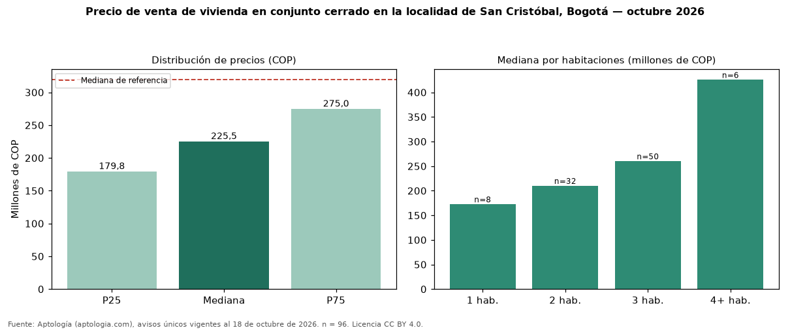

Precio de venta de vivienda en conjunto cerrado en la localidad de San Cristóbal, Bogotá — octubre 2026
Con 96 avisos únicos, el precio mediano de vivienda en conjunto cerrado en venta en la localidad de San Cristóbal, Bogotá es COP 226 millones. Eso es 29 % menos que la mediana de toda la oferta de venta en la localidad de San Cristóbal, Bogotá (COP 319 millones). Frente a los avisos fuera de conjunto cerrado del mismo grupo (COP 385 millones, n = 301), la diferencia es de −41 %; por metro cuadrado, +49 %. En todo Bogotá, la misma combinación tiene mediana COP 860 millones (−74 %). Por metro cuadrado, la mediana es COP 4.801.935/m² (+30 % frente a COP 3.695.652/m²), puesto 16 de 18 localidades comparables. Por habitaciones: 1 habitación, COP 172 millones (n = 8); 2 habitaciones, COP 210 millones (n = 32); 3 habitaciones, COP 260 millones (n = 50); 4 o más habitaciones, COP 425 millones (n = 6). El área mediana es 48 m² (referencia: 86 m²). Datos abiertos CC BY 4.0 de Aptología; fuente y búsqueda de inmuebles: https://www.aptologia.com/venta/bogota. Archivos: PDF de 2 páginas, CSV con las cifras y gráfica PNG.

| Avisos únicos | 96 |
|---|---|
| Percentil 25 | COP 179.750.000 |
| Mediana | COP 225.500.000 |
| Percentil 75 | COP 275.000.000 |
| Mediana por m² | COP 4.801.934 |
Fuente: avisos vigentes de portales inmobiliarios recopilados por Aptología, deduplicados (mínimo 30 avisos únicos por celda). Precios pedidos, no cerrados. Fecha: 2026-10-18.